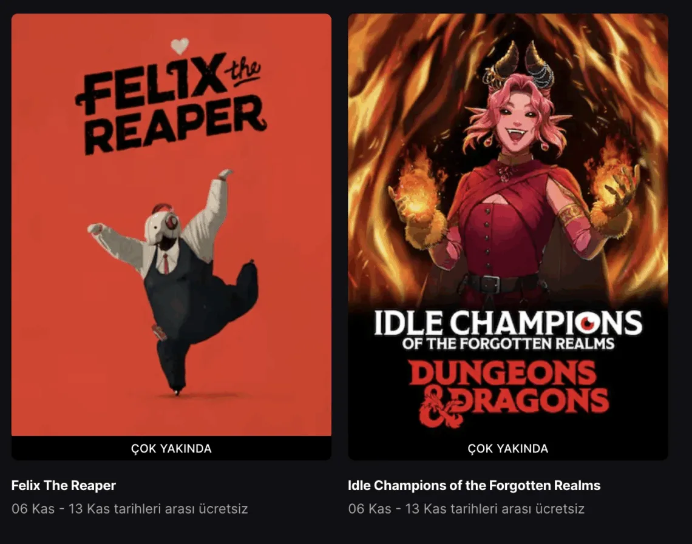

Epic Games haftanın ücretsiz oyunları erişime açılıyor!
Epic Games, her hafta olduğu gibi bu hafta da oyuncuları sevindiriyor. Platform akşam saatlerinde haftanın ücretsiz oyunlarını erişime açacak. Peki bu kez hangi yapımlar bedava olacak? İşte ayrıntılar…
Epic Games haftanın ücretsiz oyunları erişime açılıyor (6-13 Kasım)
Epic Games Store geçtiğimiz hafta Bendy and the Ink Machine ve Five Nights at Freddy’s: Into the Pit oyunlarını ücretsiz olarak dağıttı. Platform bugün 18:00’dan itibaren Felix The Reaper ve Idle Champions of the Forgotten Realms yapımlarını ücretsiz bir şekilde erişime açacak. Bunlar 6-13 Kasım tarihleri arasında bir ücret ödemeden kütüphanenize ekleyebilirsiniz.
Idle Champions of the Forgotten Realms
”Idle Champions of the Forgotten Realms, D&D çoklu evrenlerindeki karakterleri tek bir büyük macerada toplayan bir Dungeons & Dragons strateji yönetim oyunudur.”
Felix The Reaper
”Felix’in görevi insanların ölümünü sağlamak. Bunu yapmak için gölgeler arasında çalışmak ve kaderi yeniden düzenleyerek ölümün her zaman kaçınılmaz son olmasını sağlamak zorunda.
Oyunun özü, Felix’in gölgeleri manipüle ederek hedeflerini güvenli bir şekilde gölgelerin altında hazırlaması üzerine kurulu. Oynanış tarzı, Hitman Go, Monument Valley ve Sokoban karışımı bir sadelik ve zekâya dayanıyor.
Bir Ölüm Meleği olarak ustalaşman gereken üç temel kural var:
Her bölüm karelerden oluşan bir ızgara üzerinde geçer. Karelerin bazıları aydınlıkken bazıları gölgededir. Felix’in işini yapabilmesi için gölgede kalması gerekir.
Felix’in güneşi döndürme ve nesneleri hareket ettirme gücü vardır. Bu sayede yeni gölgeler oluşturabilir, gölgelerin yönünü değiştirebilir ve hedeflerine ulaşmak için yeni yollar açabilir.
Her seviyenin nihai amacı, hedeflerini doğru konuma getirip ölümlerini sağlamaktır.
Bu temel oynanışın ötesinde, oyun derin bir hikâye katmanıyla sarılmıştır: ölüm, dans, sanat tarihi, aşk ve komedi iç içe geçmiştir. Böylece yalnızca zekanı zorlayan “ölüm gölgeleri bulmacaları” değil, aynı zamanda ölüm üzerine eğlenceli, duygusal ve sanatsal bir hikâyeyi de deneyimlersin.”